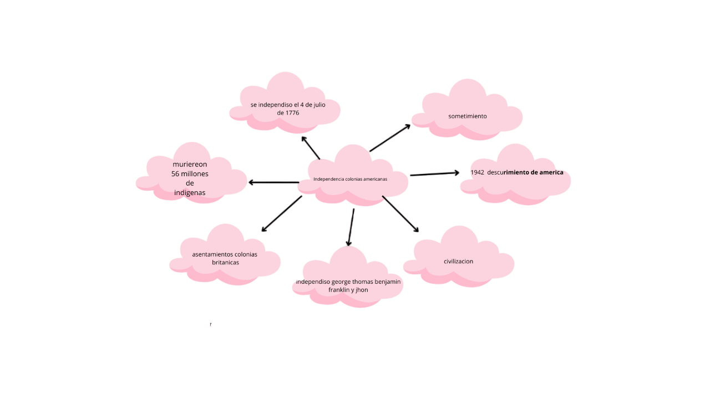

Algunas personas no se sienten comodas con su nacionalidad. ya sea, por que le hagan bullying, lo discriminen, lo rechazen, etc. No debería ser así ya que cada persona es diferente y no debería sentirse mal, ya sea, con sus comunidades, tradiciones, etc. Por mi parte, las personas deberían sentirse cómodas con su nación sea como sea.
